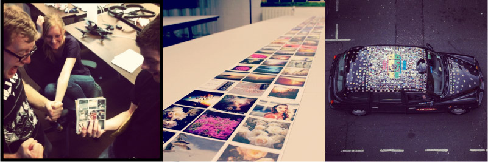

Last Sunday, it was announced that the service I had created, StickyGram, was acquired by PhotoBox. The official announcement covers the specifics of the deal and the sentiments of the team. These are a few of my own reflections.
For me, the deal marked a positive end to an extraordinary personal journey that started more than two years ago. This was my first real business. I had dabbled with ideas before, but I never had the fortitude or courage to see any of them through. From the start, I made a conscious decision to do this for the learning and not the "exit". Perhaps that's what made it different.
Messing with magnets
It began with a fairly trivial idea; turn people's Instagram images into fridge magnets. Over time, we grew it into a service that reached all around the world. In between, there was excitment, doubt, disappointment and elation. But mostly there was grind. No "hockey stick" growth, just small victories we fought for and earned each day. Somedays, we messed up. We couldn't always give 100%. I probably beat myself up too much for it.
In many ways, we were lucky. The Instagram team built an incredible product. Without their vision and focused execution there wouldn't be a vibrant community sharing their lives in images. Also, we didn't need outside investors. My employers, Mint Digital, were willing to take a gamble and allowed me to start it from within the agency. I am tremendously grateful to have been given the resources, mentoring and autonomy to follow my instincts.
Barely viable to mobile optimised
There were dark moments. I remember 3am on our first Christmas eve, staring down an inbox full of customers who hadn't received their orders, knowing each one was a gift that would go unfulfilled. Fortunately, startups are a team sport and we had a stellar crew. I'm thankful for everyone at Mint for pitching in. Your encouragement and support made the challenges much less frightening. In particular I would like to thank the core team, Phil, Kaye, Matt and Ed. You deserve a huge chunk of credit for contributing so much to the success of StickyGram. Thank you for trusting me, even when I doubted myself.
Getting the hang of packaging design
One of our biggest challenges was finding someone to make the magnets. I am tremendously grateful to our manufacturers for their help. You guys took a chance on our idea when everyone else said it couldn't be done. Without your ingenuity and tireless attention to quality, StickyGram would have never delighted so many individuals around the world.
We started out by putting nothing more than a few pictures and words on a landing page. But that was enough for the Internet to echo back. It was a modest response, but to us it was deafening. Thank you to all our early supporters and collaborators. Even though we were rough round the edges, you still trusted us with your pictures and endorsement. Your tweets, feedback and patience helped guide us and built the confidence that kept us going.

Collaborating with Github, Printing someone's entire IG feed, Covering a taxi with 1000 StickyGrams to mark the launch of IG for Android
Most of all I'd like to thank everyone who bought StickyGrams. Out of all the services vying for your attention and money, you chose us. I hope we lived up to your expectations. I'd especially like to thank those of you who took the time to write to us. You made a little office in London very happy with stories of how much delight our product brought you.
Looking back, I am still amazed at what we achieved. We took a simple idea and put it into the hands of people around the world. With PhotoBox's strong track record in customised gifts, I have no doubt they'll improve upon what we started and introduce many more people to StickyGram. As for Mint, a lot has been said about agencies creating businesses. Few have followed through and even fewer have seen any meaningful returns. I'd like to write about this more in the future. For now, Mint are trailblazing. I'm happy to have been a part of it and look forward to see where they take it.
As for me, I left StickyGram and Mint behind in November last year to see what else I can create. Business was better than ever and I was sure the team could operate without me. I had set out to earn experience and confidence, and with StickyGram, I gained that and more.
I will be moving to San Francisco this autumn. I'm excited for the next part of my journey.
Thanks to following people for helping me write this: